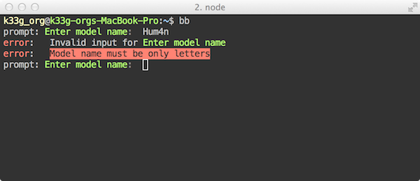
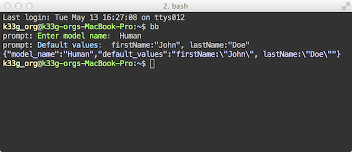

Je vous expliquais il y a peu comment construire ses propres outils en ligne de commande avec node et npm : http://k33g.github.io/2014/05/09/NPM-NODE-CLI.html. Nous allons voir aujourd'hui comment ajouté un peu d'interactivité et de couleur à tout ça. Donc, il faut repartir du même projet (donc lire l'article).
Lorsque je parle d'interactivité, je veux dire, que mon "programme" va "me poser" des questions auxquelles je vais devoir répondre. Pour cela je vais utiliser prompt (https://github.com/flatiron/prompt), et pour les couleurs, le bien nommé colors.js (https://github.com/Marak/colors.js). Modifiez donc votre fichier package.json de la manière suivante :
{
"name": "bbtools",
"version": "0.0.0",
"bin": { "bb": "bb.js"},
"dependencies": {
"underscore": "1.6.0",
"prompt": "0.2.12",
"colors": "0.6.2"
}
}
Puis faites moi un petit npm install pour télécharger les 2 nouvelles dépendances.
bb.jsMaintenant, plutôt que de passer le nom du modèle en argument, je souhaite que ce soit l'outil qui demande le nom du modèle, je voudrais aussi pouvoir saisir les valeurs par défaut du modèle. Nous allons donc modifier le code du fichier bb.js de la façon suivante :
Ajout des référence à prompt et colors:
#!/usr/bin/env node
var fs = require('fs')
, _ = require('underscore')
, prompt = require('prompt')
, colors = require('colors');
Ici on ne change rien:
require.extensions['.tpl'] = function (module, filename) {
module.exports = fs.readFileSync(filename, 'utf8');
};
var tpl = _.template(require("./bb.tpl"));
Ajout d'un "schema" de saisie pour prompt:
var schema = {
properties: {
model_name: {
description: 'Enter model name'.green,
pattern: /^[a-zA-Z]+$/,
message: 'Model name must be only letters'.inverse.red,
required: true
},
default_values: {
description: 'Default values'.blue,
default: ""
}
}
};
Vous notez que vous avez "la main" sur ce que vous pouvez ou n pouvez pas saisir. Ensuite, notez aussi ceci : 'Enter model name'.green ou 'Model name must be only letters'.inverse.red et encore 'Default values'.blue, c'est colors.js qui permet en augmentant les strings de définir les couleurs d'affichage des textes dans votre console ou terminal.
Utilisation du "schema" de saisie:
Il suffi de passer à prompt.get() votre schema ainsi que la fonction à exécuter avec comme paramètres les erreurs (err) et les données saisies (result). resultest un objet qui a pour propriétés les propriétés de schema.properties donc model_name et default_values
prompt.get(schema, function (err, result) {
if(err) {
console.log("Bye!".rainbow);
process.exit(1);
} //Ctrl+c to exit
console.log(JSON.stringify(result).cyan);
fs.writeFileSync(
process.cwd() +"/" + result.model_name + ".js"
, tpl({modelName: result.model_name, defaultValues: result.default_values})
);
});
bb.tplNous modifions le template pour prendre en compte la nouvelle valeur defaultValues: result.default_values :
/*--- <%= modelName %> Model ---*/
var <%= modelName %>Model = Backbone.Model.extend({
defaults : function (){
return {<%= defaultValues %>}
},
urlRoot : "<%= modelName.toLowerCase() %>s"
});
/*--- <%= modelName %>s Collection ---*/
var <%= modelName %>sCollection = Backbone.Collection.extend({
url : "<%= modelName.toLowerCase() %>s",
model: <%= modelName %>Model
});
Dans un terminal, tapez bb et répondez (trompez vous aussi) :


Avec le code généré :
/*--- Human Model ---*/
var HumanModel = Backbone.Model.extend({
defaults : function (){
return {firstName:"John", lastName:"Doe"}
},
urlRoot : "humans"
});
/*--- Humans Collection ---*/
var HumansCollection = Backbone.Collection.extend({
url : "humans",
model: HumanModel
});
C'est tout simple, un peu plus "user friendly", et bientôt vous pourrez refaire Yeoman ;).